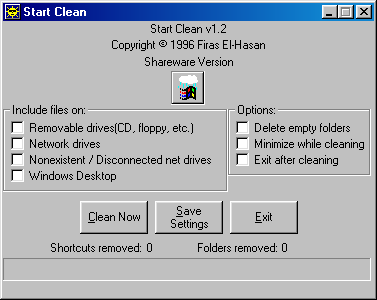
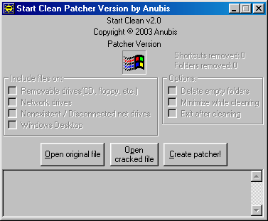
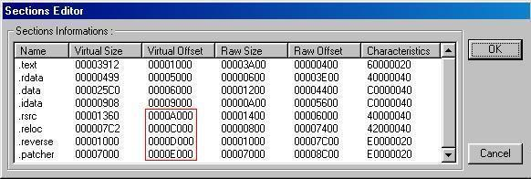
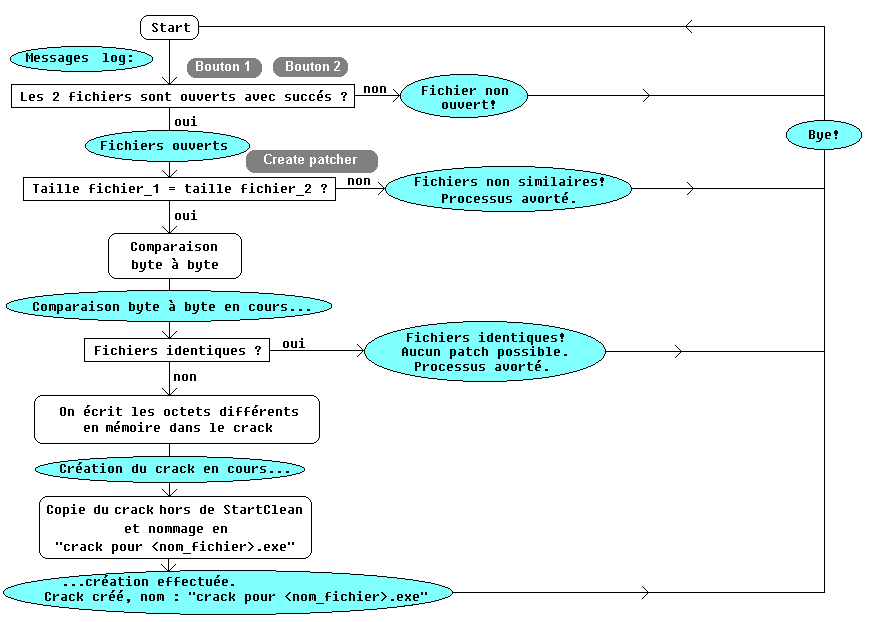
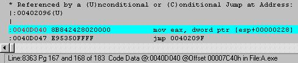
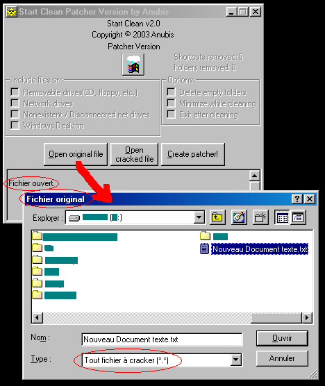
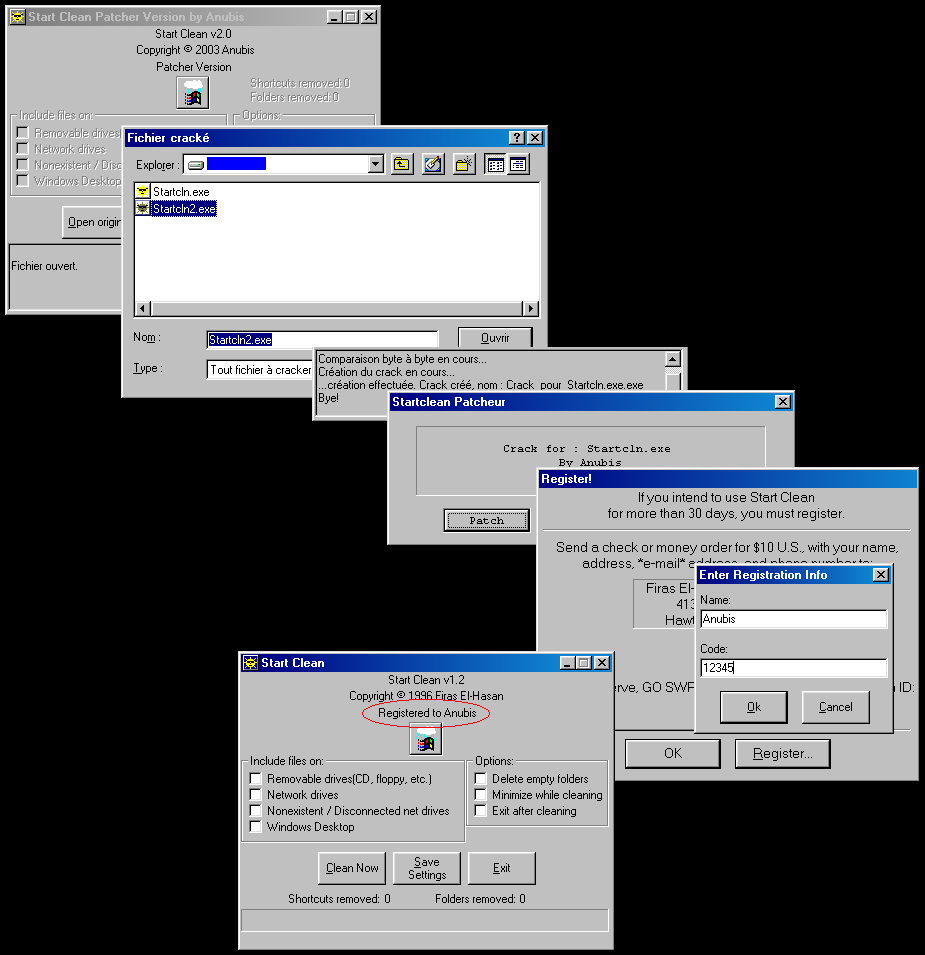

Il y a quelques temps, j'ai lu l'interview d'Oracle, réalisée par Seven de la FFF, à la sortie de notre dernier Mémento (le numéro 5 ou M5), et je lis ceci :
|
<Oracle> Au fait à l'occasion la sortie du M5 je voudrais dire une petite chose a tout ceux qui écrivent des tutoriaux sur Startclean.... <Oracle> LAISSEZ LE MOURRIR EN PAIX ! La corp a retourné ce petit utilitaire de rien du tout, on l'a cracké d'au moins 2 façons, keygenné, auto-keygenné, peut-être même qu'Anubis fait du RE dessus la nuit :) <Oracle> ca devient ridicule, surtout lorsqu'on lit dans 3 ou 4 tuts la description de startclean ! <Oracle> "un petit utilitaire qui blablabla" ! prenez un crackme et laissez ce pauvre Firas (El-Hasan, son auteur) tranquille! |
Alors là, mon sang ne fait qu'un tour face à cet affront innommable :o), donc voici les résolutions que j'ai prises:
- Firas n'aura jamais de tranquillité, même au royaume des morts (foi d'Anubis, je sais de quoi je parle!)
- A partir de maintenant, j'irai au lit à 8h du mat', et je me lèverai uniquement quand la nuit sera tombée
- Et surtout...
Note pour Oracle: voilà ce qu'il en coûte de me lancer des vannes en public :o) (Anubis)
Note de Anubis: j'avais franchement d'autres projets en priorité à faire et pas du tout l'intention de reverser Startclean, mais après ce qu'à dit Oracle, je ne pouvais pas laisser passer cela!
Donc comme d'hab, on attache sa ceinture et on y va...
Go!
Il s'agit ici de transformer Startclean en générateur de patch/crack. Pour les neurasthéniques du cerveau, j'explique le principe rapidos : vous choisissez un fichier exe original, vous choisissez son petit frère que vous venez de cracker (fichier exe modifié), et vous appuyez sur le bouton 'Patch it!'. Ni une, ni deux, le soft se met au boulot (ils sont toujours au boulot les softs, c'est pas juste, ils n'ont pas de vacances et même pas de syndicats... Les syndicats, ils ne se sont pas encore bougés le cul pour défendre les droits des softs??!! mais qu'est qu'ils branlent ces gueulards?!?! ' sont jamais là quand on a besoin d'eux, c'est un monde ça quand même...), donc le soft se met au boulot, on voit l'avancée dans la fenêtre de status, et ploum!!! Un zoli exe nous est pondu pour patcher/cracker votre soft. Après vous en faites ce que vous voulez, c'est VOTRE problème.
Donc, si vous avez (lu et) tout bien retenu la leçon dans mon tut sur le Sharepad au M5, vous savez maintenant qu'on commence par reverser un soft en modifiant d'abord les ressources. Au lieu de vous raconter ma vie, jetez un oeil sur les 2 images ci-dessous, et sur les explications qui vont avec :
| Interface comme vous la connaissez tous : | Interface qui fait fantasmer Oracle : | |
|
 |
 |
On remarquera au passage l'évolution du symbole de kro$oft, à croire que reverser un soft fait la pluie et le beau temps!! Mouarf, elle était facile, je l'avoue mais c'était trop tentant...
J'aurais pu complètement virer les éléments de texte qui sont grisés, ça aurait donné une vraie tête de patcheur mais je les laisse pour qu'on voit bien les changements.
Voici les modifs (de haut en bas) :
...le tout sous Resources Hacker. Le script donne au final :
113 DIALOG 0, 0, 247, 176
STYLE DS_MODALFRAME | DS_CENTER | WS_MINIMIZEBOX | WS_VISIBLE | WS_CAPTION | WS_SYSMENU
CAPTION "Start Clean Patcher Version by Anubis"
CLASS "ClnClass"
LANGUAGE LANG_ENGLISH, SUBLANG_ENGLISH_US
FONT 8, "MS SANS SERIF"
{
CONTROL "&Open original file", 1015, BUTTON, BS_PUSHBUTTON | WS_CHILD | WS_VISIBLE | WS_TABSTOP, 36, 110, 60, 20
CONTROL "O&pen cracked file", 1014, BUTTON, BS_PUSHBUTTON | BS_CENTER | BS_VCENTER | BS_MULTILINE | WS_CHILD | WS_VISIBLE |
WS_TABSTOP, 101, 110, 45, 20
CONTROL "&Create patcher!", 1013, BUTTON, BS_PUSHBUTTON | WS_CHILD | WS_VISIBLE | WS_TABSTOP, 151, 110, 60, 20
CONTROL "Removable drives(CD, floppy, etc.)", 1002, BUTTON, BS_AUTOCHECKBOX | WS_CHILD | WS_VISIBLE | WS_DISABLED |
WS_TABSTOP, 5, 60, 125, 10
CONTROL "Network drives", 1003, BUTTON, BS_AUTOCHECKBOX | WS_CHILD | WS_VISIBLE | WS_DISABLED | WS_TABSTOP, 5, 70, 63, 10
CONTROL "Nonexistent / Disconnected net drives", 1004, BUTTON, BS_AUTOCHECKBOX | BS_LEFT | BS_TOP | BS_MULTILINE | WS_CHILD |
WS_VISIBLE | WS_DISABLED | WS_TABSTOP, 5, 80, 141, 10
CONTROL "Windows Desktop", 1008, BUTTON, BS_AUTOCHECKBOX | WS_CHILD | WS_VISIBLE | WS_DISABLED | WS_TABSTOP, 5, 90, 74, 10
CONTROL "Delete empty folders", 1031, BUTTON, BS_AUTOCHECKBOX | WS_CHILD | WS_VISIBLE | WS_DISABLED | WS_TABSTOP, 155, 60, 84, 10
CONTROL "Minimize while cleaning", 1038, BUTTON, BS_AUTOCHECKBOX | WS_CHILD | WS_VISIBLE | WS_DISABLED | WS_TABSTOP, 155, 70, 88, 10
CONTROL "Exit after cleaning", 1000, BUTTON, BS_AUTOCHECKBOX | WS_CHILD | WS_VISIBLE | WS_DISABLED | WS_TABSTOP, 155, 80, 72, 10
CONTROL "Shortcuts removed:", -1, STATIC, SS_LEFT | WS_CHILD | WS_VISIBLE | WS_DISABLED | WS_GROUP, 161, 30, 62, 8
CONTROL "0", 1006, STATIC, SS_LEFT | WS_CHILD | WS_VISIBLE | WS_DISABLED | WS_GROUP, 223, 30, 13, 8
CONTROL "Folders removed:", -1, STATIC, SS_LEFT | WS_CHILD | WS_VISIBLE | WS_DISABLED | WS_GROUP, 161, 39, 55, 8
CONTROL "0", 1007, STATIC, SS_LEFT | WS_CHILD | WS_VISIBLE | WS_DISABLED | WS_GROUP, 216, 39, 10, 8
CONTROL "Progress1", 1005, "msctls_progress32", WS_CHILD | WS_VISIBLE | WS_BORDER, 117, 34, 13, 14
CONTROL "Start Clean v2.0", -1, STATIC, SS_LEFT | WS_CHILD | WS_VISIBLE | WS_GROUP, 98, 0, 52, 8
CONTROL "Copyright (c) 2003 Anubis", -1, STATIC, SS_LEFT | WS_CHILD | WS_VISIBLE | WS_GROUP, 85, 10, 83, 8
CONTROL "Patcher Version", 1034, STATIC, SS_CENTER | WS_CHILD | WS_VISIBLE | WS_GROUP, 54, 20, 140, 8
CONTROL 109, -1, STATIC, SS_ICON | SS_SUNKEN | WS_CHILD | WS_VISIBLE, 112, 30, 18, 20
CONTROL "Include files on:", -1, BUTTON, BS_GROUPBOX | WS_CHILD | WS_VISIBLE | WS_DISABLED, 1, 50, 145, 55
CONTROL "Options:", -1, BUTTON, BS_GROUPBOX | WS_CHILD | WS_VISIBLE | WS_DISABLED, 150, 50, 95, 45
CONTROL "", 1009, EDIT, ES_LEFT | ES_MULTILINE | ES_AUTOVSCROLL | ES_READONLY | WS_CHILD | WS_VISIBLE | WS_BORDER |
WS_VSCROLL | WS_TABSTOP, 0, 133, 245, 42
}
A la dernière ligne, la ressource STATIC d'ID 1009 est effacée, et remplacée par la ligne ci-dessus avec EDIT. Cela permettra un affichage des messages alignés à gauche et sur plusieurs lignes!
Pour passer "Shareware version" en "Patcher Version", on peut faire ça de deux manières :
Mais Oracle a raison, c'est sans intérêt ces histoires...
N'oubliez pas, que le programme est toujours actif, et que ce n'est pas parce qu'on a changé les strings et l'interface qu'en appuyant sur un bouton (par exemple), rien ne va se passer...
Bien, à partir de maintenant, le boulot à faire est le suivant :
Héhé, je vois déjà ZIKOUESSTCHIONNE arriver : "Et on le sort d'où le patch?". Tout simple, de là :
Merci au passage à Kheo de m'avoir fait ce petit exe en vitesse, ainsi que de me mettre un anti-softice :o/ dans un truc pareil quand je lui demande de me faire ça touuuuuuuuuut simple!!! :op (Bon je l'ai viré l'anti-softice, donc vous ne vous en occupez pas...).
Cet exe sera rajouté à la main dans l'exe de Startclean (on fera une nouvelle section pour ça - cf mon tut du M5 sur les exes en général), et si les deux fichiers à comparer sont différents, on copiera cet exe (planqué dans celui de Startclean) dans un fichier nouvellement créé, et on y écrira dedans les bytes à patcher ainsi que le nom du soft à patcher. On aura ainsi généré notre patcheur.
On va créer 2 nouvelles sections dans l'exe de Startclean. Une qui contient notre code reverse (.reverse), d'environ en tout cas de 0x1000 bytes (ça suffira pour la longueur), et une seconde qui ne va contenir QUE et TOUT notre patcheur (.patcher) d'environ exactement de 0x7000 bytes.
Après avoir modifié les ressources sous Resource Hacker, Startclean n'a pas changé de taille. Chez MOI (chez vous ça sera peut-être différent à cause de la compilation des ressources, mais par analogie c'est exactement la même chose), la dernière section (.reloc) s'arrête en 0x7BFF. Donc la section suivante (.reverse) commence en 0x7C00 avec une longueur de 0x1000 bytes, et termine donc en 0x8BFF. Ensuite vient la section .patcher qui fait 0x7000 bytes de long. Elle commence en 0x8C00 et termine donc en 0xFBFF. Pour connaître la taille en bytes du patcheur, il suffit de l'ouvrir sous un hexedit et de regarder le dernier offset tout en bas du fichier.
Startclean va donc passer de 0x7BFF bytes à 0x7BFF + 0x1000 + 0x7000 = 0xFBFF. Ce qui va en gros lui doubler sa taille, passant de 31 à 63 Ko (si tout à l'heure il avait gardé la ligne, là ça devient de l'obésité totale...).
On commence par l'ajout de la 1ère section. Si vous ne comprenez pas la manip, je vous renvoie au tut sur le PE du Memento 5.
On rajoute (à la main) sous l'hexedit les 2 sections après les avoir intégré dans l'en-tête PE. On obtient (pour l'en-tête PE) :
00000260 00000000 40000042 2E726576 65727365 ....@..B.reverse 00000270 00100000 00D00000 00100000 007C0000 .............|.. 00000280 00000000 00000000 00000000 200000E0 ............ ... 00000290 2E706174 63686572 00700000 00E00000 .patcher.p...... 000002A0 00700000 008C0000 00000000 00000000 .p.............. 000002B0 00000000 200000E0 00000000 00000000 .... ...........
Soit sous Procdump :

Lors de l'ajout des 2 sections, il est important que les valeurs des VOffsets se suivent dans un ordre logique (offset de chaque section supérieur à celui de la précédente et proportionnel à RSize - carré rouge)! Sinon lors des sauts sauvages depuis .text dans .reverse, ca donnera n'importe quoi...
Au niveau des caractéristiques des sections, comme .reverse va exécuter du code, on lui colle la même chose que .text mais en full option, soit 0xE0000020. Même chose pour .patcher, car elle va contenir les bytes modifiés qui sont dans le fichier cracké. Mais surtout, on change aussi la taille de l'exe (size of image) en la passant de 0xD000 à 0xE000 + 0x7000 = 0x15000 à l'offset du PE en 0xD000. Sinon on aura un méchant plantage pour cause de mémoire insuffisante.
Ensuite, on va sous un hexedit en 0x7C00 (i.e. à la fin de la dernière section = .reloc), et on insert 0x1000 bytes de 00 (Menu EDIT>INSERT...). Voilà notre section .reverse! Sous le même éditeur hexa, on ouvre l'exe du patcheur dans une nouvelle fenêtre et on copie entièrement son code dans la section créée pour, sous Startclean à partir de l'offset 0x8C00. Si vous avez des problèmes de tampon mémoire (je ne garantie pas pour les hygiéniques :o/), copiez le code du patcheur par paquets de 3000 bytes à la fois. Ensuite sauvez, et lancez le Startclean.exe ainsi modifié. Il marche parfaitement en montrant notre nouvelle interface, il a ses 2 nouvelles sections - dont 1000 bytes de libre pour du code (yeaahh!) - et comme dans Alien, un exe dans l'exe à la fin! Et l'exe final passe de 31 à 63Ko comme prévu. Aaaah, c'est beau les mathématiques!!! :o)
A partir de maintenant commence la partie la plus intéressante de ce tut : le coding en op-codes, c'est à dire l'op-coding (glop-glop!).
Tout d'abord voyons un schéma de fonctionnement par rapport aux différents cas possibles. Comme je l'ai dit dans le tut sur le sharepad, en reverse on commence toujours par modifier les ressources. Ensuite, on fait le diagramme du fonctionnement des modifications qui sont à faire :

Petit commentaire de la logique :
On ouvre les deux fichiers (original + cracké) avec les 2 premiers boutons. Pour une raison quelconque, si l'ouverture ne marche pas, on quitte le processus. Avec le 3e bouton (Create patcher!), on compare ensuite la taille des fichiers. Ceci pour éviter d'ouvrir n'importe quoi et de comparer des choses non comparables. On dégage si les fichiers n'ont pas la même taille. On compare ensuite les 2 fichiers ouverts byte à byte, dans le but d'isoler les bytes modifiés. Si ces bytes sont au nombre de zéro, il n'y a rien à cracker et on ne va pas faire de patch, donc on dégage ici aussi (fichiers identiques) et on engueule l'utilisateur au passage. Les bytes différents sont écrits dans le padding du crack qui est dans Startclean (sous la forme 'offset,byte_cracké'). Puis on copie le patcheur de la section .patcheur hors de Startclean. Il faudra là un peu reverser le crack pour qu'il puisse lire les bytes qu'on y a mis. Enfin, on renomme le crack créé en "Crack_pour_<...>.exe" et on termine le processus en saluant (Bye!).
Je mets ici toutes les chaînes à utiliser (et qui apparaîtront dans la fenêtre de log) à la fin de la section .reverse en un bloc compact. C'est très officiellement notre section .data :op Chaque chaîne est 1/null-terminated, 2/commence par 0x0D0A (retour chariot et affichage en début de ligne. Ne pas mettre 0A0D, ça ne marche pas!) pour permettre l'affichage à la ligne dans la logbox. On colle ces strings à la fin de notre section .reverse en prenant soin de laisser au moins autant de padding après, car on aura d'autres chaînes à rajouter pour le passage des APIs. Ca donne :
00008900 0D0A4279 6521000D 0A466963 68696572 ..Bye!...Fichier 00008910 206E6F6E 206F7576 65727421 000D0A46 non ouvert!...F 00008920 69636869 6572206F 75766572 742E000D ichier ouvert... 00008930 0A466963 68696572 73206E6F 6E207369 .Fichiers non si 00008940 6D696C61 69726573 21205072 6F636573 milaires! Proces 00008950 73757320 61766F72 74E92E00 0D0A436F sus avort.....Co 00008960 6D706172 6169736F 6E206279 746520E0 mparaison byte . 00008970 20627974 6520656E 20636F75 72732E2E byte en cours.. 00008980 2E000D0A 46696368 69657273 20696465 ....Fichiers ide 00008990 6E746971 75657321 20417563 756E2070 ntiques! Aucun p 000089A0 61746368 20706F73 7369626C 652E2050 atch possible. P 000089B0 726F6365 73737573 2061766F 7274E92E rocessus avort.. 000089C0 000D0A43 72E96174 696F6E20 64752063 ...Cr.ation du c 000089D0 7261636B 20656E20 636F7572 732E2E2E rack en cours... 000089E0 000D0A2E 2E2E6372 E9617469 6F6E2065 ......cr.ation e 000089F0 66666563 7475E965 2E204372 61636B20 ffectu.e. Crack 00008A00 6372E9E9 2C206E6F 6D203A20 63726143 cr.., nom : Crac 00008A10 6B5F706F 75725F00 00000000 00000000 k_pour_......... 00008A20 00000000 00000000 00000000 00000000 ................ 00008A30 00000000 00000000 00000000 00000000 ................ 00008A40 00000000 00000000 00000000 00000000 ................ 00008A50 00000000 00000000 00000000 00000000 ................ 00008A60 46696368 69657220 6F726967 696E616C Fichier original 00008A70 00466963 68696572 20637261 636BE900 .Fichier crack.. 00008A80 546F7574 20666963 68696572 20E02063 Tout fichier . c 00008A90 7261636B 65722028 2A2E2A29 00000000 racker (*.*).... 00008AA0 00000000 00000000 00000000 00000000 ................ 00008AB0 436F6D64 6C673332 2E646C6C 004B6572 Comdlg32.dll.Ker 00008AC0 6E656C33 322E646C 6C005573 65723332 nel32.dll.User32 00008AD0 2E646C6C 00476574 4F70656E 46696C65 .dll.GetOpenFile 00008AE0 4E616D65 41004372 65617465 46696C65 NameA.CreateFile 00008AF0 41004765 7446696C 6553697A 65005F6C A.GetFileSize._l 00008B00 72656164 00000000 00000000 00000000 read............ 00008B10 00000000 00000000 00000000 00000000 ................
Les 3 dernières strings n'ont pas à être formaté. Elles serviront de titres dans la boite de dialogue commune "Open". Attention de laisser la dernière string (avec "(*.*)") DEUX FOIS null terminated! En 8AB0, on met les dll et APIs dont on aura besoin. La liste n'est pas terminée ici et évoluera peut être au cours du tut...
Ensuite on peut directement coder à partir de "l'algorithme" du diagramme.
Pour se faire la main, on va détourner le code du 1er bouton (où les IDs sont comparées dans le listing asm) vers le début de notre section .reverse par un jump, et (après y avoir mis comme d'hab les instructions écrasées) on renvoie direct tout ça juste après notre jump sauvage initial. Donc en gros, on va neutraliser le 1er bouton.
Lors de la modification des ressources sous Resource Hacker, on a repéré les IDs des éléments qui nous intéressent :
La dernière ID correspond à notre fenêtre d'affichage des messages (status). En faisant une recherche des IDs (par exemple 0003F7, ne pas oublier les quelques zéros devant, ça permet de localiser tout de suite la bonne occurrence), on tombe ici :
* Possible Reference to Dialog: DialogID_0071, CONTROL_ID: 03F5, "&Exit" | :00402083 3DF5030000 cmp eax, 000003F5 :00402088 742B je 004020B5 * Possible Reference to Dialog: DialogID_0071, CONTROL_ID: 03F6, "&Save Settings" | :0040208A 3DF6030000 cmp eax, 000003F6 :0040208F 7437 je 004020C8 * Possible Reference to Dialog: DialogID_0071, CONTROL_ID: 03F7, "&Clean Now" | :00402091 3DF7030000 cmp eax, 000003F7 :00402096 743A je 004020D2 :00402098 8B842428020000 mov eax, dword ptr [esp+00000228] :0040209F 8BB4241C020000 mov esi, dword ptr [esp+0000021C] :004020A6 50 push eax
Donc sous HIEW, on va en 402096, on écrase le jump court (en 7E) par notre jump sauvage long (en E9...) qui mène au début de notre section .reverse (en 40D040 - je laisse 30 bytes de libre pour marquer "Début de la section .reverse" et "Bouton1"), et on nop (9090...) le reste de "mov eax, dword ptr [esp+00000228]" que l'on remet juste après notre jump sauvage.
.00402083: 3DF5030000 cmp eax,0000003F5 .00402088: 742B je .0004020B5 .0040208A: 3DF6030000 cmp eax,0000003F6 .0040208F: 7437 je .0004020C8 .00402091: 3DF7030000 cmp eax,0000003F7 .00402096: E9A5AF0000 jmp .00040D040 .0040209B: 90 nop .0040209C: 90 nop .0040209D: 90 nop .0040209E: 90 nop .0040209F: 8BB4241C020000 mov esi,[esp][00000021C]
Puis on copie les instructions écrasées en 7C40 sous l'hexedit, mais en 40D040 sous HIEW! Et on retourne juste après notre jump sauvage, histoire de tester le jump en aller-retour :

On va donc continuer par un "petit" truc tout "simple", à savoir utiliser le 1er bouton pour ouvrir le fichier original. On va utiliser la boite de dialogue commune "Ouvrir" qui se trouve dans quasiment tous les softs. Pour cela, il nous faut utiliser la combinaison d'APIs GetOpenFileName/OpenFileName. Par abus de langage je parle d'APIs, mais OpenFileName est une structure pointée par l'API GetOpenFileName. Petit problème, GetOpenFileName, qui fait partie de la dll Comdlg32.dll, n'est pas dans la IAT de Startclean malgré tous ses kilos en trop. La Comdlg32.dll n'est même pas appelée...
Si on fait un petit tour dans les imported functions sous Wdasm, on ne trouve aucune API intéressante pour ouvrir un fichier. Au passage, on repère WriteFile (qui sera utile pour créer et écrire dans notre patcheur hors de l'exe de Startclean). Décidément, Startclean est l'exemple idéal pour traiter ce sujet du patcher.
Pour pouvoir ouvrir notre fichier, on va utiliser la classique méthode LoadLibrary/GetProcAddress (puisque ces deux APIs sont dans la IAT de Startclean) pour appeler GetOpenFileName (et charger OpenFileName). De quoi s'agit-il? Et bien comme on n'a pas l'API dans la IAT, on va aller la chercher dans la dll chargée en mémoire "à la main". Loadlibrary récupère le handle de la dll en mémoire (c'est aussi la valeur que l'on obtient en utilisant un dumper et en regardant la valeur en mémoire de la dite dll...). Puis l'API GetProcAddress va dans cette dll (via le handle récupéré) et recherche le handle de l'API dont on a besoin et qui n'est pas dans les imported fonctions. Il ne reste plus qu'à appeler cette API en faisant "call handle" où le handle est dans eax (call eax donc ;) ).
Le Win32.hlp nous donne les informations suivantes sur la structure des 2 APIs GetOpenFileName et OPENFILENAME :
* The GetOpenFileName function creates an Open common dialog box that lets the user specify the drive,
directory, and the name of a file or set of files to open.
BOOL GetOpenFileName(
LPOPENFILENAME lpofn // address of structure with initialization data
);
* The OPENFILENAME structure contains information that the GetOpenFileName and GetSaveFileName functions use
to initialize an Open or Save As common dialog box. After the user closes the dialog box, the system returns
information about the user's selection in this structure.
typedef struct tagOFN { // ofn
DWORD lStructSize;
HWND hwndOwner;
HINSTANCE hInstance;
LPCTSTR lpstrFilter;
LPTSTR lpstrCustomFilter;
DWORD nMaxCustFilter;
DWORD nFilterIndex;
LPTSTR lpstrFile;
DWORD nMaxFile;
LPTSTR lpstrFileTitle;
DWORD nMaxFileTitle;
LPCTSTR lpstrInitialDir;
LPCTSTR lpstrTitle;
DWORD Flags;
WORD nFileOffset;
WORD nFileExtension;
LPCTSTR lpstrDefExt;
DWORD lCustData;
LPOFNHOOKPROC lpfnHook;
LPCTSTR lpTemplateName;
} OPENFILENAME;
Avant de coder, il faut réfléchir un peu. Pour l'API GetOpenFileName, il n'y a qu'un paramètre à passer - le pointeur sur la structure OpenFileName -, ce qui est facile. Quant à la structure elle-même, il faut la regarder d'un peu plus prés pour voir son fonctionnement qui après coup est assez simple. Elle comporte 20 paramètres!
mov adresse_dans_le_tableau, argument_à_passer
Donc un peu comme avec un échiquier, on place nos informations sur leurs cases respectives, et l'API GetOpenFileName s'occupera de gérer tout ça, cases vides ou occupées.
Maintenant, pour le choix des différents paramètres à passer, accrochez-vous! Quand on passera un paramètre, je mettrai son explication en couleur dans le texte et dans le tableau final en dessous. Si la couleur est blanche, on ne passe rien. Là, il faut lire un peu :
OPENFILENAME STRUCT
En mémoire (dans la fenêtre des données sous SI), notre tableau aura la tête suivante (et se trouvera juste après le code ci-dessous) :
4C 00 00 00 XX XX 00 00-00 00 40 00 80 DE 40 00 00 00 00 00 00 00 00 00-00 00 00 00 70 DC 40 00 3F 00 00 00 00 00 00 00-00 00 00 00 00 00 00 00 60 DE 40 00 04 18 28 00-00 00 00 00
Ensuite, il nous faut ouvrir le fichier à proprement dit avec l'API CreateFileA dont voilà la structure:
HANDLE CreateFile(
LPCTSTR lpFileName, // pointer to name of the file
DWORD dwDesiredAccess, // access (read-write) mode
DWORD dwShareMode, // share mode
LPSECURITY_ATTRIBUTES lpSecurityAttributes, // pointer to security attributes
DWORD dwCreationDistribution, // how to create
DWORD dwFlagsAndAttributes, // file attributes
HANDLE hTemplateFile // handle to file with attributes to copy
);
Constant Definitions (à recouper avec les explications de win32.hlp):
Const GENERIC_READ = &H80000000
Const GENERIC_WRITE = &H40000000
Const FILE_SHARE_READ = &H1
Const FILE_SHARE_WRITE = &H2
Const CREATE_ALWAYS = 2
Const CREATE_NEW = 1
Const OPEN_ALWAYS = 4
Const OPEN_EXISTING = 3
Const TRUNCATE_EXISTING = 5
Const FILE_ATTRIBUTE_ARCHIVE = &H20
Const FILE_ATTRIBUTE_HIDDEN = &H2
Const FILE_ATTRIBUTE_NORMAL = &H80
Const FILE_ATTRIBUTE_READONLY = &H1
Const FILE_ATTRIBUTE_SYSTEM = &H4
Const FILE_FLAG_DELETE_ON_CLOSE = &H4000000
Const FILE_FLAG_NO_BUFFERING = &H20000000
Const FILE_FLAG_OVERLAPPED = &H40000000
Const FILE_FLAG_POSIX_SEMANTICS = &H1000000
Const FILE_FLAG_RANDOM_ACCESS = &H10000000
Const FILE_FLAG_SEQUENTIAL_SCAN = &H8000000
Const FILE_FLAG_WRITE_THROUGH = &H80000000
L'appelle de cette API se fera ici aussi via la méthode LoadLibrary/GetProcAddress, puis en final, on sauvera le handle du fichier ouvert (sinon l'API renvoie -1 ou 0xFFFFFFFF) en eax vers son endroit prévu (en 40DC50 pour le bouton 1 et en 40DC58 pour le bouton 2).
Un dernier point consiste dans le traitement du buffer pour l'affichage des strings suite aux actions des boutons 1 et 2. Bien que l'on ait coché l'option multiligne pour le champ EDIT dans les ressources, l'affichage à la ligne semble ne pas se faire automatiquement. Ainsi, avant d'afficher une chaîne, on va lire (GetDlgItemTextA) les 50d derniers caractères affichés dans EDIT (ID=1009d), les mettre dans un buffer de 80d caractères, copier (lstrcat) à la fin de la chaîne notre string à afficher et réafficher (SetDlgItemTextA) le tout! L'inconvénient de cette méthode est que le buffer est vite dépassé si on fait "mumuse" avec les boutons pour ouvrir les fichiers, mais pour un nombre succinct de manips, on peut très bien s'en servir. Le bouton 3 aura sa propre routine.
Bon sans plus de rififis, voici le code (écrit sous HIEW et sous un éditeur hexa 50/50) :
.0040D040: 0F85F0000000 jne .00040D136 ;si on n'a pas appuyé sur le bouton 1, on saute ce code! .0040D046: 68B0DE4000 push 00040DEB0 ;pointe sur la string de la dll Comdlg32.dll dont on veut le handle... .0040D04B: FF1590924000 call LoadLibraryA ;...qui est renvoyé en eax par l'API .0040D051: 68D5DE4000 push 00040DED5 ;pointe sur la string de l'API GetOpenFileNameA .0040D056: 50 push eax ;pointe sur la string de l'API GetOpenFileNameA .0040D057: FF1554924000 call GetProcAddress ;renvoie en eax l'adresse de l'API recherchée .0040D05D: C70550D140004C000000 mov d,[00040D150],00000004C ;maintenant on passe nos valeurs du tableau. Ici sa taille (4Ch) .0040D067: FF75E8 push d,[ebp-0018] ;là, on met sur la pile l'handle de Startclean... .0040D06A: 8F0554D14000 pop d,[00040D154] ;que l'on pop où il faut dans le tableau. Astuce! .0040D070: C70558D1400000004000 mov d,[00040D158],000400000 ;ImageBase .0040D07A: C7055CD1400080DE4000 mov d,[00040D15C],00040DE80 ;string du filtre .0040D084: C7056CD14000B0DC4000 mov d,[00040D16C],00040DCB0 ;buffer qui contient le path du fichier ouvert .0040D08E: C70570D140003F000000 mov d,[00040D170],00000003F ;taille de ce buffer .0040D098: C70580D1400060DE4000 mov d,[00040D180],00040DE60 ;titre de la dialog box "Ouvrir" .0040D0A2: C70584D1400004182800 mov d,[00040D184],000281804 ;flags .0040D0AC: 6850D14000 push 00040D150 ;adresse où commence notre structure OpenFileName. 1er et seul paramètre de l'API qui suit .0040D0B1: FFD0 call eax ;eax contient toujours la valeur correspondant à GetOpenFileNameA, on l'appelle! .0040D0B3: 68BDDE4000 push 00040DEBD ;pointe sur Kernel32.dll .0040D0B8: FF1590924000 call LoadLibraryA ;renvoie son handle en eax .0040D0BE: 68E6DE4000 push 00040DEE6 ;pointe sur CreateFileA .0040D0C3: 50 push eax ;handle de Kernel32.dll .0040D0C4: FF1554924000 call GetProcAddress ;renvoie le handle de CreateFileA en eax .0040D0CA: 6A00 push 000 ;aucun handle pour ce paramètre .0040D0CC: 6A01 push 001 ;FILE_ATTRIBUTE_READONLY .0040D0CE: 6A03 push 003 ;OPEN_EXISTING .0040D0D0: 6A00 push 000 ;Pas de sécurité sur le fichier .0040D0D2: 6A01 push 001 ;FILE_SHARE_READ .0040D0D4: 6800000080 push 080000000 ;GENERIC_READ: mode lecture seulement .0040D0D9: 68B0DC4000 push 00040DCB0 ;pointe sur le nom du fichier ouvert .0040D0DE: FFD0 call eax ;call CreatFileA (ouvre le fichier en lecture) .0040D0E0: 8BF0 mov esi,eax ;changement de variables .0040D0E2: 684F000000 push 00000004F ;taille du buffer de la logbox .0040D0E7: 6800DC4000 push 00040DC00 ;offset du buffer .0040D0EC: 68F1030000 push 0000003F1 ;ID de la logbox (3F1h = 1009d) .0040D0F1: FF75E8 push d,[ebp-0018] ;on push notre handle de Startclean .0040D0F4: FF15D8924000 call GetDlgItemTextA ;on lit ce qui est affiché dans la logbox et on le met dans le buffer .0040D0FA: 83FEFF cmp esi,-001 ;après le call, esi!=-1 si fichier ouvert, sinon esi=-1 .0040D0FD: 7507 jne .00040D106 ;fichier ouvert? On saute .0040D0FF: 6807DD4000 push 00040DD07 ;sinon on pousse la string "Fichier non ouvert!"... .0040D104: 7405 je .00040D10B ;...et on saute au 2e push en 40D10B .0040D106: 681DDD4000 push 00040DD1D ;sinon on pousse la string "Fichier ouvert"... .0040D10B: 6800DC4000 push 00040DC00 ;texte de la logbox .0040D110: FF153C924000 call lstrcatA ;on colle notre chaîne dans la logbox .0040D116: 893550DC4000 mov [00040DC50],esi ;on sauve le handle du fichier 1 .0040D11C: 6800DC4000 push 00040DC00 ;(nouveau) texte de la logbox .0040D121: 68F1030000 push 0000003F1 ;ID de la logbox (3F1h = 1009d) .0040D126: FF75E8 push d,[ebp-0018] ;on push notre handle de Startclean .0040D129: FF15E0924000 call SetDlgItemTextA ;on écrit le message adéquat dans la logbox .0040D12F: 8B842428020000 mov eax,[esp+000000228] ;instruction écrasée par notre jump sauvage du début .0040D136: E9644FFFFF jmp .00040209F ;retour au début!
Propre, simple et clair (enfin j'espère pour vous...!). Et si on annule ou ferme la boite "Ouvrir", le message est "Fichier non ouvert!" :o). Au final, voilà le résultat avec un fichier bidon en exemple, dont le path se retrouvera dans notre buffer (vérifiez le sous SI!) :

Ici rien de plus simple, on fait un copier collé sous l'éditeur hexa de la 1ère partie, et on ajuste les offsets (les changements sont en vert). La structure OpenFileName est au même endroit entre le code du 1er bouton et celui du 2ème bouton ;o). Ca donne :
.0040D1C0: 3DF6030000 cmp eax,0000003F6 ;instruction écrasée par notre jump sauvage du début .0040D1C5: 0F85E9000000 jne .00040D2B4 ;si on n'a pas appuyé sur le bouton 2, on saute ce code! .0040D1CB: 68B0DE4000 push 00040DEB0 .0040D1D0: FF1590924000 call LoadLibraryA .0040D1D6: 68D5DE4000 push 00040DED5 .0040D1DB: 50 push eax .0040D1DC: FF1554924000 call GetProcAddress .0040D1E2: C70550D140004C000000 mov d,[00040D150],00000004C .0040D1EC: FF75E8 push d,[ebp-0018] .0040D1EF: 8F0554D14000 pop d,[00040D154] .0040D1F5: C70558D1400000004000 mov d,[00040D158],000400000 .0040D1FF: C7055CD1400080DE4000 mov d,[00040D15C],00040DE80 .0040D209: C7056CD1400070DC4000 mov d,[00040D16C],00040DC70 ;Offset du buffer 2 .0040D213: C70570D140003F000000 mov d,[00040D170],00000003F .0040D21D: C70580D1400071DE4000 mov d,[00040D180],00040DE71 ;Offset du titre 2 .0040D227: C70584D1400004182800 mov d,[00040D184],000281804 .0040D231: 6850D14000 push 00040D150 .0040D236: FFD0 call eax .0040D238: 68BDDE4000 push 00040DEBD .0040D23D: FF1590924000 call LoadLibraryA .0040D243: 68E6DE4000 push 00040DEE6 .0040D248: 50 push eax .0040D249: FF1554924000 call GetProcAddress .0040D24F: 6A00 push 000 .0040D251: 6A01 push 001 .0040D253: 6A03 push 003 .0040D255: 6A00 push 000 .0040D257: 6A01 push 001 .0040D259: 6800000080 push 080000000 .0040D25E: 6870DC4000 push 00040DC70 ;Offset du buffer 2 .0040D263: FFD0 call eax .0040D265: 8BF0 mov esi,eax .0040D267: 684F000000 push 00000004F .0040D26C: 6800DC4000 push 00040DC00 .0040D271: 68F1030000 push 0000003F1 .0040D276: FF75E8 push d,[ebp-0018] .0040D279: FF15D8924000 call GetDlgItemTextA .0040D27F: 83FEFF cmp esi,-001 .0040D282: 7507 jne .00040D28B .0040D284: 6807DD4000 push 00040DD07 .0040D289: 7405 je .00040D290 .0040D28B: 681DDD4000 push 00040DD1D .0040D290: 6800DC4000 push 00040DC00 .0040D295: FF153C924000 call lstrcatA .0040D29B: 893558DC4000 mov [00040DC58],esi ;buffer pour le handle du fichier 2 .0040D2A1: 6800DC4000 push 00040DC00 .0040D2A6: 68F1030000 push 0000003F1 .0040D2AB: FF75E8 push d,[ebp-0018] .0040D2AE: FF15E0924000 call SetDlgItemTextA ;attention: il n'y a pas d'instruction écrasée ici! .0040D2B4: E9D84DFFFF jmp .000402091 ;On retourne juste après notre jump sauvage
En n'oubliant pas de raccorder tout ça au bouton 2 au début :
* Possible Reference to Dialog: DialogID_0071, CONTROL_ID:03F5, "&Create patcher!" | :00402083 3DF5030000 cmp eax, 000003F5 :00402088 742B je 004020B5 :0040208A E901B10000 jmp 0040D190 :0040208F 90 nop :00402090 90 nop * Referenced by a (U)nconditional or (C)onditional Jump at Address: |:0040D1E7(U) * Possible Reference to Dialog: DialogID_0071, CONTROL_ID:03F7, "&Open original file" | :00402091 3DF7030000 cmp eax, 000003F7 :00402096 E9A5AF0000 jmp 0040D040
Cette partie étant allée assez vite, on va maintenant coder le coeur du patcher.
On commence par brancher le 3e bouton sur notre code en 40D2F0:
:00402083 E968B20000 jmp 0040D2F0 * Referenced by a (U)nconditional or (C)onditional Jump at Addresses: |:0040D382(U), :0040D387(U) | :00402088 90 nop :00402089 90 nop :0040208A E931B10000 jmp 0040D1C0 :0040208F 90 nop :00402090 90 nop
Avant de comparer les 2 fichiers, il faut quand même s'assurer qu'ils ont la même taille, sinon la comparaison va être un bordel monstrueux. On code donc d'abord la comparaison des 2 fichiers ouverts avec l'API Getfilesize, que l'on appelle toujours par la méthode LoadLibraryA/GetProcAddress :
DWORD GetFileSize(
HANDLE hFile, // handle of file to get size of
LPDWORD lpFileSizeHigh // address of high-order word for file size
);
Histoire de tester la routine, dans le cas où les fichiers sont semblables ou pas, on retourne à notre boucle de comparaison des messages à la fin (jmp 402088):
.0040D2F0: 3DF5030000 cmp eax,0000003F5 ;instruction écrasée; ID du bouton pressé
.0040D2F5: 0F858C000000 jne .00040D387 ;pas le cas? on saute
.0040D2FB: 685CDD4000 push 00040DD5C ;"Comparaison byte à byte en cours"
.0040D300: 68F1030000 push 0000003F1 ;ID de la logbox
.0040D305: FF75E8 push d,[ebp-0018] ;handle de Startclean
.0040D308: FF15E0924000 call SetDlgItemTextA ;affichage du texte
.0040D30E: 68BDDE4000 push 00040DEBD ;Kernel32.dll
.0040D313: FF1590924000 call LoadLibraryA ;eax contient le handle de la dll
.0040D319: 68F2DE4000 push 00040DEF2 ;GetFileSize
.0040D31E: 50 push eax ;handle de kernel32.dll
.0040D31F: FF1554924000 call GetProcAddress ;eax contient le handle de l'API
.0040D325: 8BF8 mov edi,eax ;on sauve le handle dans edi
.0040D327: 6A00 push 000 ;pas d'option pour lpFileSizeHigh
.0040D329: 8B1550DC4000 mov edx,[00040DC50] ;handle du fichier 1 dans edx...
.0040D32F: 52 push edx ;.. passé en paramètre
.0040D330: FFD0 call eax ;appel de GetFileSize
.0040D332: 8BF0 mov esi,eax ;on sauve la taille dans esi
.0040D334: 6A00 push 000 ;pas d'option pour lpFileSizeHigh
.0040D336: 8B1558DC4000 mov edx,[00040DC58] ;handle du fichier 2 dans edx...
.0040D33C: 52 push edx ;.. passé en paramètre
.0040D33D: FFD7 call edi ;appel de GetFileSize
.0040D33F: 3BC6 cmp eax,esi ;comparaison de la taille des 2 fichiers
.0040D341: 7444 je .00040D387 ;si elle est égale, c'est ok. On saute plus loin
.0040D343: 90 nop ;partie pour futur développement
.0040D344: 90 nop ;partie pour futur développement
.0040D345: 90 nop ;partie pour futur développement
.0040D346: 90 nop ;partie pour futur développement
.0040D347: 684F000000 push 00000004F ;taille du buffer logbox pour le bouton 3
.0040D34C: 68B0DB4000 push 00040DBB0 ;offset buffer logbox pour le bouton 3
.0040D351: 68F1030000 push 0000003F1 ;ID de la logbox
.0040D356: FF75E8 push d,[ebp-0018] ;handle de Startclean
.0040D359: FF15D8924000 call GetDlgItemTextA ;on récupère le texte de la logbox ("comp. byte à byte...")
.0040D35F: 682FDD4000 push 00040DD2F ;on colle "Fichiers non similaires! Proc avorté." à la suite
.0040D364: 68B0DB4000 push 00040DBB0 ;buffer logbox pour le bouton 3
.0040D369: FF153C924000 call lstrcatA ;on colle les deux chaînes
.0040D36F: 68B0DB4000 push 00040DBB0 ;buffer logbox pour le bouton 3
.0040D374: 68F1030000 push 0000003F1 ;ID de la logbox
.0040D379: FF75E8 push d,[ebp-0018] ;handle de Startclean
.0040D37C: FF15E0924000 call SetDlgItemTextA ;on affiche la nouvelle string
.0040D382: E9014DFFFF jmp .000402088 ;on retourne à la boucle des MSG, plus tard on sautera vers "Bye!" (***)
.0040D387: E9FC4CFFFF jmp .000402088 ;on retourne à la boucle des MSG
Maintenant qu'on s'est assuré de la même taille des fichiers, on va les comparer byte par byte. Les fichiers sont toujours ouverts en lecture (on a leur handle), on connaît leur taille (dans esi), on peut donc faire une boucle "for" qui va de 1 à taille_fichier et qui lit et compare chaque byte. Si le byte est le même dans les 2 fichiers on passe au suivant, sinon on écrit le byte et l'offset du fichier 2 (le fichier cracké - bouton 2!) dans un nouveau buffer qui est prévu pour avoir jusqu'à 80 bytes de différents. Au-delà, on va tomber sur un buffer overflow... Mais comme je ne veux pas traiter ça ici, on fera au plus simple. On aura également un compteur de bytes différents (bytes modifiés dans le crack) dans edi, valeur qui nous sera utile par la suite.
Au niveau des APIs, on va utiliser un simple _lread qui est néanmoins très efficace (cf. mon tut sur le sharepad du M5). Je redonne sa structure ici :
UINT _lread(
HFILE hFile, // handle to file
LPVOID lpBuffer, // pointer to buffer for read data
UINT uBytes // length, in bytes, of data buffer
);
DWORD SetFilePointer(
HANDLE hFile, // handle of file
LONG lDistanceToMove, // number of bytes to move file pointer
PLONG lpDistanceToMoveHigh, // address of high-order word of distance to move
DWORD dwMoveMethod // how to move
);
La logique du code est la suivante :
Quant au code, il reprend celui au-dessus et est un peu long mais c'est le coeur de notre patcher, et avec la logique expliquée ci-dessus, vous devriez avoir un bon aperçu. Alors le voilà :
.0040D2F0: 3DF5030000 cmp eax,0000003F5 ;on a appuyé sur le 3e bouton?
.0040D2F5: 0F8599010000 jne .00040D494 ;non, alors on saute à la fin de ce code(***)
.0040D2FB: 685CDD4000 push 00040DD5C ;chaîne "Comparaison byte..."
.0040D300: 68F1030000 push 0000003F1 ;ID de la logbox
.0040D305: FF75E8 push d,[ebp-0018] ;handle de Startclean
.0040D308: FF15E0924000 call SetDlgItemTextA ;affichage de la chaîne
.0040D30E: 68BDDE4000 push 00040DEBD ;User32.dll
.0040D313: FF1590924000 call LoadLibraryA ;l'API renvoie son handle en eax
.0040D319: 68F2DE4000 push 00040DEF2 ;GetFileSize
.0040D31E: 50 push eax ;handle de User32.dll
.0040D31F: FF1554924000 call GetProcAddress ;eax=handle de GetFileSize
.0040D325: 8BF8 mov edi,eax ;on sauve le handle dans edi
.0040D327: 6A00 push 000 ;on n'a pas besoin de high-order word
.0040D329: 8B1550DC4000 mov edx,[00040DC50] ;handle du 1er fichier dans edx
.0040D32F: 52 push edx ;edx est sur la pile
.0040D330: FFD0 call eax ;eax donne la taille du 1er fichier
.0040D332: 8BF0 mov esi,eax ;on la sauve dans esi
.0040D334: 6A00 push 000 ;on n'a pas besoin de high-order word
.0040D336: 8B1558DC4000 mov edx,[00040DC58] ;handle du 2e fichier dans edx
.0040D33C: 52 push edx ;edx est sur la pile
.0040D33D: FFD7 call edi ;eax donne la taille du 2e fichier
.0040D33F: 3BC6 cmp eax,esi ;comparaison de la taille des 2 fichiers
.0040D341: 7440 je .00040D383 ;si elle est pareille, on saute, sinon on...
.0040D343: 684F000000 push 00000004F ;...taille du buffer de l'affichage du 3e bouton
.0040D348: 68B0DB4000 push 00040DBB0 ;buffer en question
.0040D34D: 68F1030000 push 0000003F1 ;ID de la logbox
.0040D352: FF75E8 push d,[ebp-0018] ;handle de Startclean
.0040D355: FF15D8924000 call GetDlgItemTextA ;on récupère le texte déjà affiché
.0040D35B: 682FDD4000 push 00040DD2F ;"Fichiers non similaires..."
.0040D360: 68B0DB4000 push 00040DBB0 ;texte du buffer
.0040D365: FF153C924000 call lstrcatA ;on rajoute "Fichiers non..." à la suite
.0040D36B: 68B0DB4000 push 00040DBB0 ;Buffer
.0040D370: 68F1030000 push 0000003F1 ;ID de la logbox
.0040D375: FF75E8 push d,[ebp-0018] ;handle de Startclean
.0040D378: FF15E0924000 call SetDlgItemTextA ;affichage du nouveau message
.0040D37E: E9054DFFFF jmp .000402088 ;on sautera plus tard vers "Bye!", mais pour l'instant retour
à la boucle des messages (***)
.0040D383: 33FF xor edi,edi ;reset du registre edi (compteur de bytes modifiés trouvés)
.0040D385: 68BDDE4000 push 00040DEBD ;Kernel32.dll
.0040D38A: FF1590924000 call LoadLibraryA ;eax contient son handle
.0040D390: 68FEDE4000 push 00040DEFE ;_lread
.0040D395: 50 push eax ;handle de Kernel32.dll
.0040D396: FF1554924000 call GetProcAddress ;eax contient le handle de _lread
.0040D39C: A360D14000 mov [00040D160],eax ;on le sauve dans le buffer 40D160 (qui est dans la structure
OpenFileNameA des 2 1ers boutons, mais dont on a plus besoin maintenant!)
.0040D3A1: 6A01 push 001 ;FILE_CURRENT (et début de la boucle! voir plus bas)
.0040D3A3: 6A00 push 000 ;adresse du high-order word of distance à avancer
.0040D3A5: 6A00 push 000 ;nombre de bytes à bouger pour le pointeur
.0040D3A7: A150DC4000 mov eax,[00040DC50] ;eax = handle du fichier 1
.0040D3AC: 50 push eax ;on le met sur la pile
.0040D3AD: FF15C0924000 call SetFilePointer ;on positionne le pointeur (eax renvoie sa position dans
le fichier). Cette API est dans Startclean
.0040D3B3: 8BD8 mov ebx,eax ;on sauve la position du pointeur dans ebx...
.0040D3B5: 3BDE cmp ebx,esi ;...que l'on compare à la taille du fichier restée dans esi
.0040D3B7: 745C je .00040D415 ;si on est à la fin du fichier on saute, sinon...
.0040D3B9: 6A01 push 001 ;...taille en bytes du buffer
.0040D3BB: 68A0DB4000 push 00040DBA0 ;offset du buffer qui reçoit la donnée lue du fichier 1
.0040D3C0: A150DC4000 mov eax,[00040DC50] ;eax = handle du fichier 1
.0040D3C5: 50 push eax ;on le met sur la pile
.0040D3C6: A160D14000 mov eax,[00040D160] ;eax = handle de _lread
.0040D3CB: FFD0 call eax ;eax = offset lu dans le fichier 1 à la position du pointeur
.0040D3CD: 6A01 push 001 ; | même chose mais pour le fichier 2
.0040D3CF: 6A00 push 000 ; |
.0040D3D1: 6A00 push 000 ; |
.0040D3D3: A158DC4000 mov eax,[00040DC58] ;| handle du fichier 2
.0040D3D8: 50 push eax ; | on le met sur la pile
.0040D3D9: FF15C0924000 call SetFilePointer ; |
.0040D3DF: 6A01 push 001 ; |
.0040D3E1: 68A8DB4000 push 00040DBA8 ; |
.0040D3E6: A158DC4000 mov eax,[00040DC58] ;|
.0040D3EB: 50 push eax ; |on le met sur la pile
.0040D3EC: A160D14000 mov eax,[00040D160] ;|
.0040D3F1: FFD0 call eax ; | eax = offset lu dans le fichier 2 à la position du pointeur
.0040D3F3: A1A0DB4000 mov eax,[00040DBA0] ;eax reçoit le byte lu du fichier 1
.0040D3F8: 8B0DA8DB4000 mov ecx,[00040DBA8] ;eax reçoit le byte lu du fichier
.0040D3FE: 3BC1 cmp eax,ecx ;comparaison des 2 bytes
.0040D400: 7502 jne .00040D404 ;s'ils ne sont pas égaux, on saute au code qui les sauvegarde...
.0040D402: EB9D jmps .00040D3A1 ;...sinon on revient au début de la boucle pour lire les bytes suivants
.0040D404: 890CFD00484100 mov [000414800][edi]*8,ecx ;sauvegarde du byte dan la table
.0040D40B: 891CFD04484100 mov [000414804][edi]*8,ebx ;sauvegarde de son offset dans la table
.0040D412: 47 inc edi ;incrément du compteur de bytes modifiés
.0040D413: EB8C jmps .00040D3A1 ;retour à la boucle
.0040D415: 85FF test edi,edi ;compteur de bytes modifiés à zéro?
.0040D417: 7540 jne .00040D459 ;non, on saute, sinon...
.0040D419: 684F000000 push 00000004F
.0040D41E: 68B0DB4000 push 00040DBB0
.0040D423: 68F1030000 push 0000003F1
.0040D428: FF75E8 push d,[ebp-0018]
.0040D42B: FF15D8924000 call GetDlgItemTextA ;...on récupère le texte affiché
.0040D431: 6882DD4000 push 00040DD82 "Fichiers identiques..."
.0040D436: 68B0DB4000 push 00040DBB0
.0040D43B: FF153C924000 call lstrcatA ;...on colle le texte à la suite...
.0040D441: 68B0DB4000 push 00040DBB0
.0040D446: 68F1030000 push 0000003F1
.0040D44B: FF75E8 push d,[ebp-0018]
.0040D44E: FF15E0924000 call SetDlgItemTextA ;...qu'on réaffiche...
.0040D454: E92F4CFFFF jmp .000402088 ;...et on saute à "Bye!"; pour l'instant boucle des messages(***)
.0040D459: 684F000000 push 00000004F
.0040D45E: 68B0DB4000 push 00040DBB0
.0040D463: 68F1030000 push 0000003F1
.0040D468: FF75E8 push d,[ebp-0018]
.0040D46B: FF15D8924000 call GetDlgItemTextA ;on récupère le texte affiché...
.0040D471: 68C1DD4000 push 00040DDC1 ;"Création du crack en cours..."
.0040D476: 68B0DB4000 push 00040DBB0
.0040D47B: FF153C924000 call lstrcatA ;...on rajoute la chaîne...
.0040D481: 68B0DB4000 push 00040DBB0
.0040D486: 68F1030000 push 0000003F1
.0040D48B: FF75E8 push d,[ebp-0018]
.0040D48E: FF15E0924000 call SetDlgItemTextA ;...que l'on affiche
.0040D494: E9EF4BFFFF jmp .000402088 ;et on ressaute à la boucle des messages
Note: les lignes marquées (***) devront être modifiées après le rajout du code ci-dessous !
Pour l'API _lread, bien que ce soit _lread que l'on appelle, chez moi c'est _hread (sous Softice) qui est utilisée. Ce n'est pas un problème en soit puisque 1/ ces deux APIs sont quasiment identiques, et 2/ on arrive au résultat voulu.
Les bytes modifiés sont sauvegardés dans un tableau dynamique. Une ligne en mémoire (ou dans un hexedit) a 0x10 bytes soit 4 DWORDs. Le premier DWORD reçoit le byte modifié (suivi de trois 00), puis vient l'offset du byte modifié (ebx) dans le 2e DWORD. Les DWORDs 3 et 4 reçoivent la même chose respectivement, mais pour le byte modifié suivant. On a donc les infos de 2 bytes modifiés par ligne. En choisissant un padding suffisamment grand, on peut sauvegarder 2*nb_lignes du padding bytes modifiés. Comme dans un crack on ne modifie jamais guère plus de 20d bytes, on peut choisir un padding de 10 voire 20 lignes. Si vraiment, on sortait du padding car le fichier cracké contiendrait beaucoup de bytes modifiés, alors on aurait un méchant plantage dû à l'écriture des bytes modifiés sur du code.
Le tableau dynamique (dépendant de edi) est écrit dans le plus grand padding de .patcher. Quand on va copier cette section dans un fichier (partie ci-dessous), on aura déjà ces informations d'écrites dans le crack! Pour le choix du padding, on peut se mettre juste après la déclaration des sections et avant le début de la 1ère section (ce qui nous laisserait grosso-modo la place pour 6880d bytes!), ou bien à la fin de la dernière section (avec environ 4128d bytes modifiés). Comme il est préférable de travailler dans une section plutôt que d'être dans le PE header, on va choisir la 2e solution. Donc notre table commence par exemple en 0x414830.
Le tableau prend cette forme là (en 6830 sous hexedit ou 0x414830) :
000067B0 45007800 69007400 00000000 00000000 E.x.i.t......... 000067C0 00000200 05080150 0F000800 C8002800 .......P......(. 000067D0 EC030000 FFFF8100 00000000 00000000 ................ 000067E0 00000000 00000000 00000000 00000000 ................ 000067F0 00000000 00000000 00000000 00000000 ................ 00006800 46696368 69657220 31206F72 6967696E Fichier 1 origin 00006810 616C2E74 78740000 00000000 00000000 al.txt.......... 00006820 00000000 00000000 00000000 00000000 ................ 00006830 41000000 08000000 42000000 12000000 A.......B....... 00006840 43000000 13000000 00000000 00000000 C............... 00006850 00000000 00000000 00000000 00000000 ................ 00006860 00000000 00000000 00000000 00000000 ................
On met successivement le couple (valeur du byte, offset), le tableau s'arrête automatiquement dès qu'un couple est vide (00000000). Voir après le code ci-dessous pour la signification de A,B et C.
On passe maintenant à la création du patcher à proprement dit. On copie la section .patcher entièrement dans un nouveau fichier que l'on crée via CreateFileA que l'on a déjà appelée aux boutons 1 et 2 pour ouvrir les fichiers en lecture et avoir leur handle. Ici, on va créer un nouveau fichier en écriture et le remplir avec les 0x7000 bytes de la section .patcher! On commencera par créer notre fichier en écriture avec le nom "Crack pour <nom_fichier>.exe". Voilà le détail des APIs utilisées :
short GetFileTitle(
LPCTSTR lpszFile, // pointer to full path and filename for file
LPTSTR lpszTitle, // pointer to buffer that receives filename
WORD cbBuf // length of buffer
);
LPTSTR lstrcpy(
LPTSTR lpString1, // address of buffer
LPCTSTR lpString2 // address of string to copy
);
BOOL WriteFile(
HANDLE hFile, // handle to file to write to
LPCVOID lpBuffer, // pointer to data to write to file
DWORD nNumberOfBytesToWrite, // number of bytes to write
LPDWORD lpNumberOfBytesWritten, // pointer to number of bytes written
LPOVERLAPPED lpOverlapped // pointer to structure needed for overlapped I/O
);
BOOL CloseHandle(
HANDLE hObject // handle to object to close
);
Et voilà le code détaillé :
.0040D494: EB2A jmps .00040D4C0 ;on modifie le jump du code précédent [...] .0040D4C0: 68B0DE4000 push 00040DEB0 ;Comdlg32.dll .0040D4C5: FF1590924000 call LoadLibraryA ;eax = handle de Comdlg32.dll .0040D4CB: 6805DF4000 push 00040DF05 ;GetFileTitle .0040D4D0: 50 push eax ;handle de Comdlg32.dll .0040D4D1: FF1554924000 call GetProcAddress ;eax = handle de GetFileTitle .0040D4D7: 6A1F push 01F ;taille du buffer .0040D4D9: 68D0DA4000 push 00040DAD0 ;buffer qui reçoit le nom du fichier sans l'arborescence .0040D4DE: 68B0DC4000 push 00040DCB0 ;buffer qui contient le path+nom du fichier 1 ouvert .0040D4E3: FFD0 call eax ;appel de GetFileTitle .0040D4E5: 33FF xor edi,edi ;reset du compteur edi .0040D4E7: 8B87D0DA4000 mov eax,[edi+00040DAD0] ;on déplace le Dword n°edi du nom du fichier dans eax... .0040D4ED: 8987A2304100 mov [edi+0004130A2],eax ;que l'on replace en 4130A2 (voir plus bas les explications) .0040D4F3: 83C704 add edi,004 ;on incrémente edi de 4 (taille du Dword déplacé) .0040D4F6: 83FF0C cmp edi,00C ;edi = 0x0C ? .0040D4F9: 75EC jne .00040D4E7 ;non, on revient au début .0040D4FB: 68D0DA4000 push 00040DAD0 ;buffer pour le titre/nom du crack dans Sclean PAtcher .0040D500: 6800484100 push 000414800 ;buffer pour le titre/nom du crack dans le patch/crack .0040D505: FF1518924000 call lstrcpyA ;on copie le nom .0040D50B: 68D0DA4000 push 00040DAD0 ;buffer pour le titre/nom du crack dans Sclean PAtcher .0040D510: 680CDE4000 push 00040DE0C ;pointe sur "crack_pour_" dans "...création effectuée. Crack créé, nom : crack_pour_" .0040D515: FF153C924000 call lstrcatA ;on concatène le tout .0040D51B: 6813DF4000 push 00040DF13 ;string ".exe" .0040D520: 680CDE4000 push 00040DE0C ;pointe sur "crack_pour_<nom_fichier>" .0040D525: FF153C924000 call lstrcatA ;on concatène le tout .0040D52B: 68BDDE4000 push 00040DEBD ;Kernel32.dll .0040D530: FF1590924000 call LoadLibraryA ;eax = handle de Kernel32.dll .0040D536: 68E6DE4000 push 00040DEE6 ;CreateFileA .0040D53B: 50 push eax ;handle de Kernel32.dll .0040D53C: FF1554924000 call GetProcAddress ;eax = handle de CreateFileA .0040D542: 6A00 push 000 ;hTemplateFile = NULL .0040D544: 6880000000 push 000000080 ;FILE_ATTRIBUTE_NORMAL .0040D549: 6A01 push 001 ;CREATE_NEW .0040D54B: 6A00 push 000 ;pas de sécurité .0040D54D: 6A02 push 002 ;FILE_SHARE_WRITE .0040D54F: 6800000040 push 040000000 ;GENERIC_WRITE .0040D554: 680CDE4000 push 00040DE0C ;buffer contenant le texte "crack_pour_<nom_fichier>.exe" .0040D559: FFD0 call eax ;appel de CreateFileA et création du crack .0040D55B: 8BF0 mov esi,eax ;copie du handle du crack dans esi .0040D55D: 6A00 push 000 ;dwMoveMethod = NULL .0040D55F: 6A00 push 000 ;lpDistanceToMoveHigh = NULL .0040D561: 6800000000 push 000000000 ;on n'avance pas le pointeur .0040D566: 56 push esi ;handle du crack .0040D567: FF15C0924000 call SetFilePointer ;on positionne le pointeur au début du crack vide créé .0040D56D: 6A00 push 000 ;lpOverlapped = NULL .0040D56F: 68C0DA4000 push 00040DAC0 ;buffer nb de bytes écrits .0040D574: 6800700000 push 000007000 ;taille de la section .patcher à copier .0040D579: 6800E04000 push 00040E000 ;offset à partir duquel on lit les 0x7000 bytes à copier .0040D57E: 56 push esi ;handle du crack dans lequel il faut écrire .0040D57F: FF1560924000 call WriteFile ;on écrit les 0x7000 bytes dans le crack .0040D585: 689F000000 push 00000009F | .0040D58A: 6810DB4000 push 00040DB10 | .0040D58F: 68F1030000 push 0000003F1 | .0040D594: FF75E8 push d,[ebp-0018] | .0040D597: FF15D8924000 call GetDlgItemTextA | on chope le texte de la logbox et on le met en 40DB10 .0040D59D: 68E1DD4000 push 00040DDE1 # .0040D5A2: 6810DB4000 push 00040DB10 # .0040D5A7: FF153C924000 call lstrcatA # on rajoute "...création effectuée. Crack créé, nom : crack_pour_<nom_fichier>.exe" .0040D5AD: 6810DB4000 push 00040DB10 | .0040D5B2: 68F1030000 push 0000003F1 | .0040D5B7: FF75E8 push d,[ebp-0018] | .0040D5BA: FF15E0924000 call SetDlgItemTextA | et on réaffiche le tout! .0040D5C0: A150DC4000 mov eax,[00040DC50] # .0040D5C5: 50 push eax # .0040D5C6: FF15BC924000 call CloseHandle # on ferme le fichier original .0040D5CC: A158DC4000 mov eax,[00040DC58] | .0040D5D1: 50 push eax | .0040D5D2: FF15BC924000 call CloseHandle | on ferme le fichier cracké .0040D5D8: 56 push esi # .0040D5D9: FF15BC924000 call CloseHandle # on ferme le crack .0040D5DF: E9A44AFFFF jmp .000402088 ; on retourne à la boucle des messages (***)
Pour que le code marche, il ne faut pas oublier d'actualiser le jne en début de cette partie en 0x040D2F5 où il y a (***) plus haut, sinon la boucle des messages va planter! La nouvelle version donne :
.0040D2F5: 0F85E4020000 jne .00040D5DF
Explications :
Toujours avec la technique LoadLibrary/GetProcAddress (i.e. LL/GPA), on va chercher le handle de l'API GetFileTitle dans Comdlg32.dll. Cette API permet par exemple d'extraire "Fichier.exe" de "C:/Temp/Fichier.exe". Le résultat est sauvé en 40DAD0. Le nom du fichier cracké sans l'arborescence va nous permettre deux choses :
Ensuite, de 40D515 on modifie la chaîne "crack_pour_" en "crack_pour_<nom_fichier>", en en 40D525, on rajoute le ".exe" à la fin pour obtenir "crack_pour_<nom_fichier>.exe". Une fois que l'on a le nom complet de notre crack, on peut commencer par créer le fichier vide (ouvert en écriture) avec CreateFileA en 40D559 dont on va chercher le handle via la méthode LL/GPA. L'API renvoie en eax le handle de ce fichier que l'on sauve en esi. On positionne ensuite le pointeur au début du fichier, et on commence à écrire dedans avec WriteFile en 40D57F. Dans l'ordre on a la classique démarche ouverture-position_du_pointeur-écriture-fermeture (à la fin). On écrit toute la section .patcher (0x7000 bytes) dans le crack en une seule fois. Puis on a les classiques manips pour afficher le texte, comme quoi l'opération est finie avec GetDlgItemTextA-lstrcat-SetDlgItemTextA. On finit par fermer les 3 fichiers ouverts (original, cracké et patch/crack) avec CloseHandle. Et on retourne à la boucle des messages.
Pour tester ce code et les trois cas de figure de l'algorithme (diagramme), j'ai crée 3 fichiers .txt :
A, B et C seront considérés comme bytes modifiés dans le cadre d'un crack.
Il reste une dernière manip à faire, à savoir modifier le titre du patcher (Shmeitcorp v3.1 patcheur) dans la section .patcheur en "Startclean Patcheur ". On a autant d'espaces qu'il faut à la fin pour que les deux chaînes aient la même longueur, sinon ça plante au lancement du crack... (les caractères restant de "Shmeitcorp v3.1 Patcheur" doivent être réécrits par des espaces (0x20) :
00006710 4B000000 00005300 74006100 72007400 K.....S.t.a.r.t. 00006720 63006C00 65006100 6E002000 50006100 c.l.e.a.n. .P.a. 00006730 74006300 68006500 75007200 20002000 t.c.h.e.u.r. . . 00006740 20002000 20000000 08000000 00014300 . . .........C.
Inclusion du message "Bye!"
Il faut modifier les 3 sauts marqués (***) en les orientant vers le début du code de "Bye!" en 0x040D610 :
"Fichiers non similaires..."
.0040D37E: E9054DFFFF jmp .000402088 en .0040D37E: E98D020000 jmp .00040D610 "Fichiers identiques. Aucun patch possible. Proc avorté."
.0040D454: E92F4CFFFF jmp .000402088 en .0040D454: E9B7010000 jmp .00040D610
Ainsi que le dernier jump de la partie ci-dessus. Mais pour celui-là il faut tenir compte que si l'on n'appuie pas sur le 3e bouton lors de l'utilisation du soft, la boucle des messages passe par ce jump et affichera automatiquement "Bye!" quand on appuie sur le 1er bouton par exemple. On résout le problème en modifiant aussi le jne "3e bouton d'appuyé?" vers le jump de fin du code de "Bye!" en 0x040D64B :
Dernier jump de la partie ci-dessus: .0040D5DF: E9A44AFFFF jmp .000402088 en .0040D5DF: EB2F jmps .00040D610 Jne du début du code du bouton 3: .0040D2F5: 0F8599010000 jne .00040D494 en .0040D2F5: 0F8550030000 jne .00040D64B
Startclean Patcheur s'arrête ici, il est terminé et si on ne tire pas trop sur les buffers, il marche très bien pour ce qu'il est. Il nous reste à ajuster le patch (dans la section .patcheur) pour qu'il prenne en compte le nom du ficher et les bytes modifiés qu'on lui a collé dedans!
Enfin, voilà la liste des buffers et emplacements des strings et autres que j'ai utilisé tout au long du tut pour Startclean Patcher et pour le patch/crack (attention: ces offsets sont tous dans le fichier "Startclean.exe" !!) :
****************** Startclean Patcher ******************* 40dd00 Bye! 40dd07 Fichier non ouvert! 40dd1d Fichier ouvert. 40dd2f Fichiers non similaires! Proc avorté. 40dd5c Comparaison byte à byte en cours 40dd82 Fichiers identiques. Aucun patch possible. Proc avorté. 40ddc1 Création du crack en cours... 40dde1 ...création effectuée. Crack créé, nom : crack_pour_ 40de0c crack_pour_ 40de60 Fichier original 40de71 Fichier cracké 40de80 Tout fichier à cracker (*.*) 40deb0 Comdlg32.dll 40debd Kernel32.dll 40deca User32.dll 40ded5 GetOpenFileNameA (40d150: structure OpenFileName sur 4f bytes) 40dee6 CreateFileA 40def2 GetFileSize 40defe _lread 40df05 GetFileTitle 40df13 .exe 40dcb0 /3f buffer nom fichier ouvert via bouton1 40dc70 /3f buffer nom fichier ouvert via bouton2 40dc50 /8 buffer handle fichier1 40dc58 /8 buffer handle fichier2 40dba0 /cf buffer affichage EDIT - boutons 1 et 2 40db10 /9f buffer affichage EDIT - bouton 3 40db00 /8 buffer caractère lu file 1 40db08 /8 buffer caractère lu file 2 40dad0 /1f buffer pour le titre du crack 40dac0 /DWORD buffer nb de bytes écrits via writefile ******************* Patch/crack ******************* 4130a2 Soft_à_la_con (0xd) 414830 byte différent du fichier cracké 414834 offset différent du fichier cracké 414800 /1f titre du fichier cracké
Et oui, lui aussi il faut le retoucher un peu, mais ce n'est pas fastidieux! Attention, tous les offsets indiqués dans ce chapitre 7 sont dans le fichier Patch.exe (le patch que Kheo m'a fourni).
Etat des lieux :
Avec notre startclean patcher, on obtient un patch dont le titre du fichier à patcher ainsi que les bytes et offsets à modifier sont au début du padding de la dernière section. Il nous faut maintenant identifier le code du patcheur qui patch (très certainement via un WriteFile) et le nom du fichier que le soft recherche à patcher (car notre ami Kheo ne me l'a pas donné... Je pourrai le lui demander, mais 1/je suis trop fainéant, et 2/j'en ai pas besoin ;) ).
On commence par le nom. Sachant que le patch accède un fichier, on va utiliser filemon. Mais pour cela on doit connaître le nom du thread utilisé par le patcheur. On le lance donc et on tape TASK sous softice. On trouve un "patch" qui semble bien convenir. Sous filemon, on met "patch" dans le filtre et on lance le patch. On voit que le soft cherche un fichier "a_patcher.exe". Finalement, retour sous un hexeditor pour "patch.exe" et on lance une recherche sur le nom du fichier à patcher: on le trouve dans la partie qui regroupe les strings en 0x5124.
Il y a maintenant fort à parier que le soft va appeler cet offset quand il recherchera le nom de ce fichier à patcher! Sous hiew, on note l'offset de la string en 0x5124, soit 0x405124. On lance une recherche dans l'exe sous un hexedit de 24514000 et on ne trouve qu'une occurrence: en 401093. C'est ici qu'il faut opérer! Si l'on remplace cet offset par celui de notre string en 406800 au début du padding final (attention, il faut utiliser le patch créé par startclean maintenant!), et qu'on vérifie sous filemon, le patch indiquera "Fichier non trouvé". cela signifie que ce n'est pas la bonne tactique.
Si on regarde plus bas, on remarque la suite d'APIs CreateFile/SetFilePointer/WriteFile (WriteFile est en 401186) qui correspond à l'ouverture et écriture dans un fichier. Une recherche sur l'API WriteFile donne une 2e occurrence en 401FDF qui ne ressemble pas à ce qu'on cherche. En observant le code avant et dans les 3 APIs ci-dessus, je ne l'ai pas trouvé à mon goût pour le modifier simplement. J'ai donc décidé de poser une déviation (jump) et d'écrire mon propre code pour CreateFile/SetFilePointer/WriteFile. L'endroit le plus propice me semble être la 1e instruction de l'API CreateFile en 40113F. En regardant les paddings du soft, j'ai choisi de mettre mon code à la fin de .text en 403B00. Puis quand j'aurai fini mon code, je me rebrancherai sur l'affichage du message "Crack effectué" qui commence en 401193.
Ainsi j'obtiens pour mon code :
Saut en 40113F:
* Referenced by a (U)nconditional or (C)onditional Jump at Address: |:00401108(C) | :0040113F E9BC290000 jmp 00403B00 :00401144 0000 add byte ptr [eax], al ;on se fout des 0000 puisqu'on n'utilise pas ce code-là! :00401146 6A03 push 00000003 Puis mon code:
.00403B00: 6A00 push 000 ;aucun handle pour ce paramètre .00403B02: 6880000000 push 000000080 ;FILE_ATTRIBUTE_NORMAL .00403B07: 6A03 push 003 ;OPEN_EXISTING .00403B09: 6A00 push 000 ;Pas de sécurité sur le fichier .00403B0B: 6A02 push 002 ;FILE_SHARE_WRITE .00403B0D: 6800000040 push 040000000 ;GENERIC_WRITE .00403B12: 6800684000 push 000406800 ;offset du nom du fichier à ouvrir .00403B17: FF1504404000 call CreateFileA ;on ouvre le fichier à cracker en écriture, eax contient son handle .00403B1D: 85C0 test eax,eax ;si l'ouverture ne se fait pas correctement, eax = 0... .00403B1F: 0F8ED3D6FFFF jle .0004011F8 ;...et on saute à la msgbox "Fichier non trouvé" .00403B25: 8BF0 mov esi,eax ;sinon on copie le handle du fichier à cracker dans eax .00403B27: 33DB xor ebx,ebx ;on reset notre compteur .00403B29: 6A00 push 000 ;dwMoveMethod = 0, cad FILE_BEGIN. On positionne le pointeur depuis le début du fichier .00403B2B: 6A00 push 000 ;adresse du high-order word of distance à avancer .00403B2D: 8B8334684000 mov eax,[ebx+406834] ;on lit nos entrées dans la table de 8 en 8 et on les met dans eax... .00403B33: 50 push eax ;...que l'on met sur la pile .00403B34: 56 push esi ;handle du fichier à cracker .00403B35: FF150C404000 call SetFilePointer ;on positionne le pointeur dans le fichier à cracker là où on doit changer le byte pour le crack .00403B3B: 6A00 push 000 ;lpOverlapped = NULL .00403B3D: 68803B4000 push 000403B80 ;buffer nb de bytes écrits .00403B42: 6A01 push 001 ;on n'écrit (modifie) qu'un byte .00403B44: B830684000 mov eax,000406830 ;offset du 1er byte à écrire dans eax... .00403B49: 03C3 add eax,ebx ;...auquel on rajoute l'endroit à lire dans la table... .00403B4B: 50 push eax ;...et que l'on met sur la pile .00403B4C: 56 push esi ;handle du fichier à cracker .00403B4D: FF1508404000 call WriteFile ;on écrit le byte à modifier .00403B53: 83C308 add ebx,008 ;on va sur la prochaine entrée dans notre table (8 bytes plus loin) .00403B56: 8B8330684000 mov eax,[ebx+406830] ;on lit cette valeur dans eax .00403B5C: 85C0 test eax,eax ;on teste cette valeur, si notre tableau est fini, on aura un "00"... .00403B5E: 0F85C5FFFFFF jne .000403B29 ;...qui nous fera sortir de la boucle d'écriture de nos bytes .00403B64: 56 push esi ;alors on met le handle du fichier cracké sur la pile... .00403B65: FF1558404000 call CloseHandle ;...et on ferme ce fichier... .00403B6B: E923D6FFFF jmp .000401193 ;...et on retourne au soft pour afficher le message "Fichier cracké"!
Explications :
Rien de franchement très nouveau par rapport à la section précédente, si ce n'est qu'il faut lire dynamiquement le tableau des bytes à modifier et de passer tout ça dans les APIs correctement, tel que c'est marqué plus haut. Si on ne trouve pas le fichier à ouvrir, on saute à la msgbox badboy, et si on le trouve et qu'on le patch, on saute à l'affichage du message de réussite. Plutôt simple!
Mais ce n'est pas tout, il faut aussi modifier par précaution les caractéristiques de .text en full option (60000020 -> E0000020) pour que le processus de lecture/exécution dans le padding puisse se faire correctement. Au niveau de la section .rsrc, il faut passer sa VSize de 7E0 à 1000 afin que la lecture des données en 406800 (nom du fichier à cracker) et 406830 (offsets à patcher) puissent être accessible en mémoire.
Et finalement, une fois que notre patch.exe est au point, il nous faut copier toutes ces modifications dans le fichier de startclean.exe pour qu'on ait le patch qu'il faut lors de la création du prochain patch/crack ;o).
Et au final, pour définitivement enterrer cette histoire de Startclean, on va le cracker/patcher ... par lui-même avec la technique du MemenTo 1 (bien que l'on puisse faire ça sur n'importe quel soft)! :o) :

Ô racle, Ô désespoir, n'ai-je donc tant reversé que pour ce logiciel? Voilà mon affront de lavé :o)
Comme je vous l'ai montré ici, vous voyez que l'on peut complètement transformer un soft en quelque chose qui n'a plus rien à voir après. Il suffit pour cela d'une couche graphique et des 2 APIs importantes (LoadLibrary (ou GetModuleHandle) et GetProcAddress). Cela revient à transformer un trombone en voiture! A coté, MacGyver et James Bond réunis peuvent aller se rhabiller, pfff...! :op
Avis aux collectionneurs, Startclean va devenir un soft mythique! Si vous ne le trouvez plus sur le web, regardez dans le MemenTo1 au cas où... ;o)
Greetz fly to:
Toute la Shmeitcorp, les teams de la scène FR, Zer0 de anticrack.de, the_analyst, tous ceux que j'oublie! :o) et ceux qui m'ont tenu compagnie pendant la réalisation du reverse et la rédaction de ce tut : Tchaikovsky, Barber, Beethoven, Chopin, Saint-Preux (j'espère que vous êtes sorti de prison(!) et que vous avez toujours la même inspiration magnifique), Bach, Grieg, Aranjuez, Saint Saens, Schubert, Puccini, Parry, Haendel, Katchatourian, et Rachmaninov.
Maintenant, c'est vraiment fini avec Startclean!